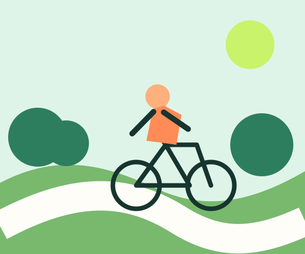
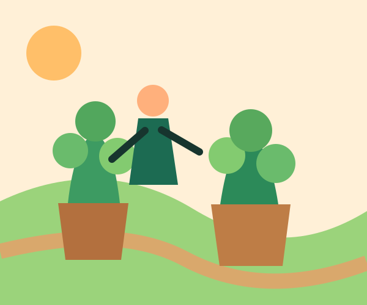
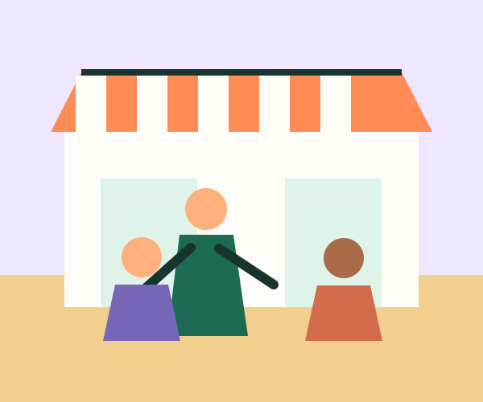
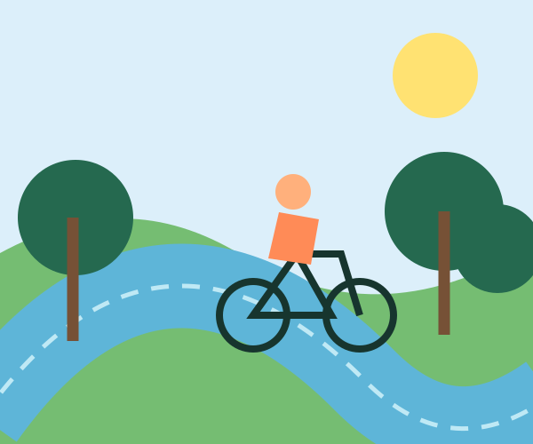

Bicicleta
Circuito Aire Limpio
4.2 km · 45 min · Fácil
Rutas seleccionadas
Filtra por experiencia y descubre una forma distinta de recorrer la ciudad.

4.2 km · 45 min · Fácil

3.1 km · 60 min · Fácil

5.0 km · 75 min · Media

7.8 km · 80 min · Media
Planificador rápido
Selecciona una opción y recibe una recomendación instantánea.